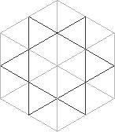
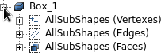
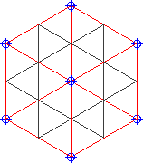
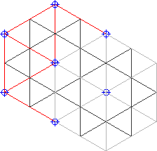
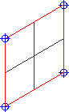
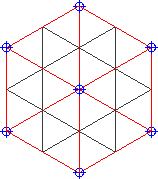

Content of this mini-tutorial:

 cfdmsh 4.0 documentation
cfdmsh 4.0 documentation cfdmsh 4.0 documentation


The purpose of this tutorial is to show how to manage geometrical groups using cfdmsh.
Cfdmsh allows to copy groups between shapes according to their geometrical description or according to their index inside the shape.
The following cfdmsh functions will be used:
NB: This tutorial was tested on Salome 7.7.1 on Linux with the following settings:
File > Preferences... > Geometry > Default display mode > Wireframe.
File > Preferences... > Geometry > Hide input objects from viewer > OFF.
Content of this mini-tutorial:

File > New
Click on  in the toolbar
in the toolbar

[Ctrl] + [T] → Select the "cfdmsh.py" file on your computer
New Entity > Primitives > Box → Apply and Close
Click on  in the 3D window toolbar
in the 3D window toolbar

Select "Box_1" → In the Python console, type:
PutAllSubShapesInAGroup( 0 )
PutAllSubShapesInAGroup( 1 )
PutAllSubShapesInAGroup( 2 )
or:
passiag( 0 )
passiag( 1 )
passiag( 2 )

Select "Box_1" → Right-click > Show Only Children

Select "Box_1" → Operations > Transformation > Translation →
Set "Dx" to 200 → Apply and Close

In the Python console, type:
CopyGeometricalGroups( 'Box_1', 'Translation_1' )
or:
cgg( 'Box_1', 'Translation_1' )
Select "Translation_1" → Right-click > Show Only Children

Only sub-shapes from "Box_1" having a sub-shape sharing the same topology in "Translation_1" were copied.
Right-click in the 3D window > Hide All
Select "Box_1" → In the Python console, type:
ExportGeometricalGroups( )
or:
egg( )
This command created a file called "cfdmsh_grps" in your home folder.
Select "Translation_1" → In the Python console, type:
ImportGeometricalGroups( )
or:
igg( )

This time, the whole groups were copied from "Box_1" to "Translation_1", regardless the change in form or position of their sub-shapes. This was possible because both source and target geometries shared the same sub-shape ID organization.
You can close this study.
END OF THIS TUTORIAL
cfdmsh 4.0 documentation
tougeron-cfd.com © 2016